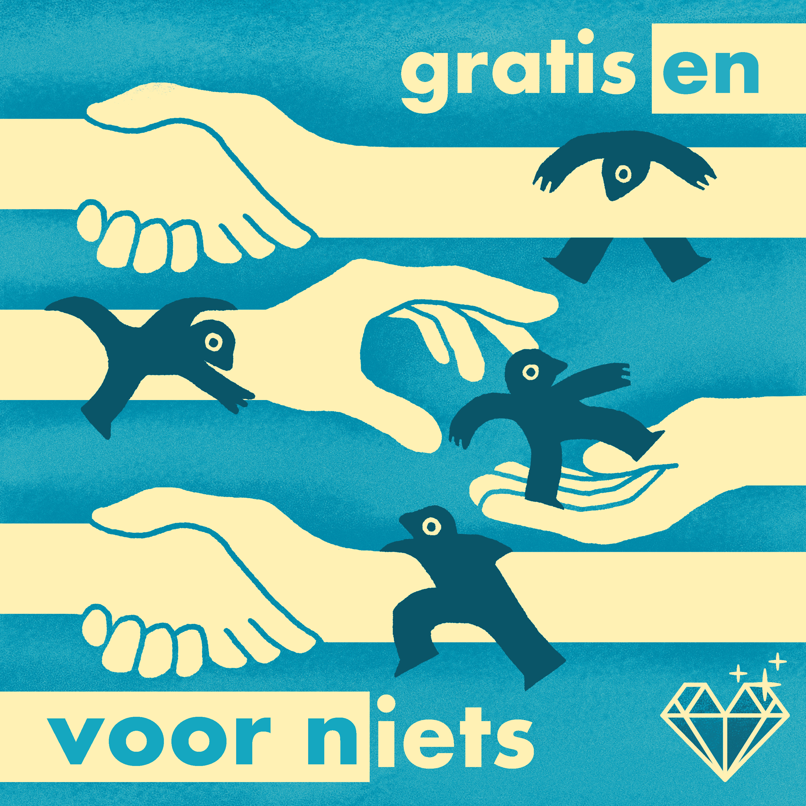

In de tweedelige podcastserie ‘Gratis en voor (n)iets’ onderzoekt Pietro Tramontin wat vrijwilligerswerk jou kan brengen. Nederland is een echt vrijwilligersland, maar jonge mensen lijken steeds meer gericht op carrière maken en investeren in zichzelf. Dat, terwijl zij de toekomstige generatie vrijwilligers moeten worden. Dit roept de vraag op: wat hebben jongeren te winnen met vrijwilligerswerk? En waar moeten ze beginnen?

Vereniging VrijwilligerswerkNL · 2025
Gratis en voor (n)iets
Tweedelige podcastserie
Luister op Spotify ↗Luister